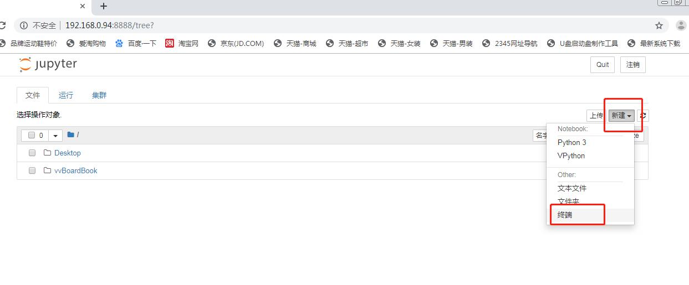
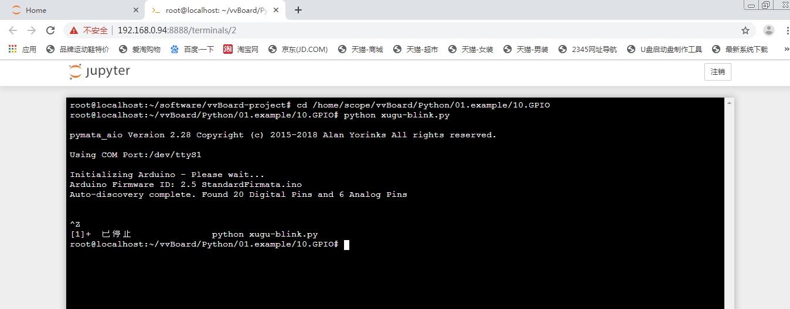

2. Python运行和库维护¶
虚谷号默认安装的是Python3.5，可以通过多种方式来运行Python代码。
2.1. 通过U盘方式运行¶
1）通过USB线将虚谷板（OTG口）连接上电脑，约十多秒后，电脑会出现一个名为vvBoard的U盘。
2）将Python文件复制到U盘的“Python”文件夹下，更名为test.py。
3）打开python_config.ini文件，修改Python=test.py和Run_time=5并保存。
4）短按虚谷板的RST键，U盘会暂时消失，等到U盘图标再次出现，Python代码已经成功执行了。
5）待vvBoard刷新后进入到Python文件夹下会看到一个python_log文件，python程序的输出内容还有错误信息全都保存在此文件中。
注：Run_time=0时不会打印log，只会打印代码格式报错信息
2.2. 通过无线方式运行¶
虚谷号内置了Jupyter，可以通过Jupyter来运行Python代码。在浏览器中输入“http://【虚谷号的IP地址】:8888”，打开Jupyter,默认密码为scope。
1.使用终端形式运行
1）点击右上角“新建”，再选择“终端”，如下图所示：
2）进入要执行的python程序文件加，例如：输入cd /home/scope/vvBoard/Python/01.example/10.GPIO
3)运行Python程序，例如：输入python xugu-blink.py
4)运行完后不想运行或者要换一个程序运行，Ctrl+z结束（python程序不能后台运行），如下图所示：
2.使用网页形式运行
1）点击右上角“新建”，再选择“Python3”，会进入下图页面：

2）在 In的框内输入python代码，例如：print(‘hello world !’)
3）点击运行，则会在框下面出现“hello world !”，如下图所示：

4）如果运行使用xugu库的程序，则运行完后或者要运行下一个程序时，需点击中断服务，如下图所示：

2.3. 通过主机模式运行python¶
1.使用编辑器运行python程序
Python(3.5)是Python的编辑器，可以在里面进行编译执行。
2.使用终端运行.py文件
创建一个.py文件，在终端输入Python xxx.py运行，例：D13LED 灯亮2秒熄灭4秒的闪烁
** 操作步骤：**
a.在桌面创建一个文件，命名为led.py
b.打开led.py，手动输入下面方框内的代码（或将桌面vvBoard里的Python01.example10.GPIOxugu_blink.py文件内容复制到led.py内，并改成和下面的代码一样），保存关闭。
import time # 导入time模块
from xugu import LED # 从xugu库中导入LED类
led = LED(13) # 初始化LED类
while True: # 用循环实现持续地开灯关灯，到达闪烁的效果
led.on() # 点亮连接13号引脚的LED灯
time.sleep(2) # 持续2秒
led.off() # 关闭LED灯
time.sleep(4) # 持续4秒
c.在桌面空白处右击，选择Open Terminal Here，则会打开终端
d.输入python led.py，按下回车键（Eenter），稍等一会，出现如下图所示：

e.执行成功，D13LED灯会亮2秒熄灭4秒的闪烁。关闭窗口
2.4. 虚谷号默认安装的库列表¶
Package———————–Version
attrs————————-18.2.0
autobahn———————-18.12.1
Automat———————–0.7.0
backcall———————-0.1.0
baidu-aip———————2.2.13.0
beautifulsoup4—————-4.4.1
bleach————————3.0.2
catfish———————–1.4.2
chardet———————–2.3.0
Click————————-7.0
command-not-found————-0.3
constantly——————–15.1.0
cycler————————0.10.0
decorator———————4.3.0
defer————————-1.0.6
defusedxml——————–0.5.0
entrypoints——————-0.2.3
Flask————————-1.0.2
gast————————–0.2.2
html5lib———————-0.999
hyperlink———————18.0.0
idna————————–2.8
incremental——————-17.5.0
ipykernel———————4.10.0
ipython———————–7.2.0
ipython-genutils————–0.2.0
ipyturtle———————0.2.4
ipywidgets——————–7.4.2
itsdangerous——————1.1.0
jedi————————–0.13.2
Jinja2————————2.10
jsonschema——————–2.6.0
jupyter———————–1.0.0
jupyter-client—————-5.2.4
jupyter-console—————6.0.0
jupyter-core——————4.4.0
kiwisolver——————–1.0.1
language-selector————-0.1
lightdm-gtk-greeter-settings–1.2.1
lxml————————–3.5.0
MarkupSafe——————–1.1.0
matplotlib——————–3.0.2
menulibre———————2.1.3
mistune———————–0.8.4
mpmath————————1.1.0
mugshot———————–0.3.1
nbconvert———————5.4.0
nbformat———————-4.4.0
notebook———————-5.7.4
numpy————————-1.15.4
onboard———————–1.2.0
pandas————————0.23.4
pandocfilters—————–1.4.2
parso————————-0.3.1
pexpect———————–4.0.1
pickleshare——————-0.7.5
Pillow————————3.1.2
pip—————————19.0.3
prometheus-client————-0.5.0
prompt-toolkit—————-2.0.7
psutil————————3.4.2
ptyprocess——————–0.5
pycups————————1.9.73
pycurl————————7.43.0
pyFirmata———————1.1.0
pyflakes———————-2.1.1
pygame————————1.9.4
Pygments———————-2.3.1
pygobject———————3.20.0
PyHamcrest——————–1.9.0
pymata-aio——————–2.28
PyMySQL———————–0.9.3
pyparsing———————2.3.0
pyserial———————-3.4
python-apt——————–1.1.0
python-dateutil—————2.7.5
python-debian—————–0.1.27
python-systemd—————-231
pytz————————–2018.7
pyxdg————————-0.25
PyYAML————————3.13
pyzmq————————-17.1.2
qtconsole———————4.4.3
redis————————-3.0.1
reportlab———————3.3.0
requests———————-2.9.1
Send2Trash——————–1.5.0
sessioninstaller————–0.0.0
setuptools——————–20.7.0
six—————————1.12.0
ssh-import-id—————–5.5
sympy————————-1.3
system-service—————-0.3
terminado———————0.8.1
testpath———————-0.4.2
tornado———————–5.1.1
traitlets———————4.3.2
turtle————————0.0.2———————/usr/local/lib/python3.5/dist-packages
Twisted———————–18.9.0
txaio————————-18.8.1
ubuntu-drivers-common———0.0.0
unattended-upgrades———–0.1
urllib3———————–1.13.1
vpnotebook——————–0.1.3
wcwidth———————–0.1.7
webencodings——————0.5.1
websockets——————–7.0
Werkzeug———————-0.14.1
wheel————————-0.29.0
widgetsnbextension————3.4.2
xkit————————–0.0.0
zope.interface—————-4.6.0
zxing————————-0.9.3
2.5. 库的安装及卸载¶
1、库的安装：
pip install [package]
2、库的卸载：
pip uninstall [package]
注：卸载完成之后到usr/local/lib/Python3.5/dist-packages目录下检查package文件夹是否还在，如果还在，删除之【注意此时必须关闭python】
如果你看到显示“>>>”，则说明还没有关闭python，可输入exit()关闭python。